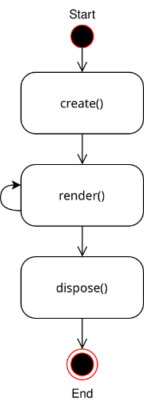
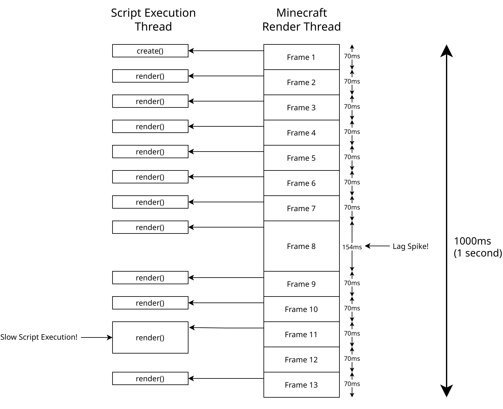

JCM Scripting#
JCM Scripting is a feature introduced in JCM v2, which allows the use of JavaScript to control PIDS/Decoration Object/Vehicle rendering and sounds.
This feature is inspired by the Nemo Transit Expansion for MTR 3, and thus also implements a very similar paradigm, as well as backward compatibility functions.
One may consider this as an unofficial continuation for the NTE Scripting Feature.
Introduction#
What is Scripting in JCM?#
Essentially it allows you to use JavaScript to insert custom logic into the game, which will be executed and widens the possibilities of the MTR Mod.
The JS engine is powered by Rhino, an implementation of JS in pure Java.
What is JavaScript?#
JavaScript is a programming language that... in very simple terms, instructs computer to do stuff :D
It can describe conditional logic, such as:
If there's pineapple on top of the pizza, then remove the pineapple and eat the pizza, otherwise eat the pizza.
This rest of this article assumes that you have a basic understanding of JavaScript and JavaScript types, so it won't delve into the basic syntax and other aspects here.
You can learn JavaScript from resources on the web, such as here.
Do I have to learn Java to write JavaScript?
JavaScript does not have anything, or not much to do with Java at all, even though they share "Java" in the name.
But can I use Java in JavaScript?
Since Java and JavaScript are 2 distinct languages, normally you can't mix both of them.
However the JS Engine that JCM uses, Rhino, is based on Java, and it does contain interoperability with java classes/packages via a feature called LiveConnect. In-fact, many of the built-in JCM APIs is provided using this feature, they are all just Java class underneath, magic!
See Calling Java Class Methods for details.
JavaScript Execution Environment#
While JS is commonly associated with web development or even server applications (e.g. Node.js), JCM's implementation usage of JS only utilize the base language itself.
As such, this means that you only really need to care about the syntax (e.g. Variable & Function Declaration, conditional logic) as well as some Built-in Objects such as Date, Map etc.
Other stuff such as HTML/CSS/DOM manipulation is not applicable to JCM Scripting.
Keep that in mind, as IDE (Such as Visual Studio Code) may assume you are developing for a webpage and provides suggestions that are not applicable to JCM/NTE scripting!
Script Type#
"Enough yapping, so what can JCM Scripting do?"
Well in of itself, it does nothing. JCM Scripting is mere a base platform to provide JS scripting ability.
To leverage the platform, JCM Scripting is consisted of different Script Type, so what are they?
Script Type via Analogy#
To better understand Script Type, let's imagine the following:
- JCM = Exhibition Organizer
- JCM Scripting = Exhibition Event
- JS Engine = Venue
- Script Type = Booth
Within an exhibition (JCM Scripting), there are multiple booths (Script Type). There are no "one way" to interact with a booth (Script Type) as each booth is setup different. However each booth still have a predefined plot size and a specific entrance direction that the visitor expects. (Common function calls)
All booths (Script Type) may take advantage of the common facilities provided by the venue (Scripting Engine) such as air-con & lighting (Base JS API), and anything that an exhibition organizer provides (Shared APIs/Utilities provided by JCM).
Script Type via Example#
Script Type is an implementation of scripting which is domain-specific, meaning it only targets one specialized area.
Here, let's look at a snippet of 2 form of script type: Eyecandy Scripting and PIDS Scripting:
You'll notice that function name (and number of parameters) are the same across script types (The render function), however the parameter values passed to them are different (pids vs blockEyecandy).
Different types of script can also expose different classes/objects to them (e.g. PIDS Scripting's Text class), and they may impose their own design paradigm.
TLDR (Too long to read :D)
JCM Scripting is a foundation to serve different types of scripting. The use case and possibilities of scripts is defined by the different type of scripting available.
Available Script Types#
JCM currently provides 3 script types out of the box, each type providing a domain-specific use cases. (PIDS Scripting for PIDS Layout, Vehicle Scripting to render stuff on a vehicle, etc.)
| Type | Description |
|---|---|
| Vehicle Scripting | This allows scripts to render 3D models/displays, as well as playing sounds for an MTR Vehicle/Train. |
| Eyecandy Scripting | This allows scripts to render 3D models/displays, as well as playing sounds on an MTR Decoration Object |
| PIDS Scripting | This allows scripts to draw custom text/texture, as well as playing sounds for a JCM PIDS in the form of a PIDS Preset |
Below describes the general lifecycle and flow of a regular script execution.
Script Flow#
Parsing/Loading Stage#
When Minecraft reloads it's resource pack (When the game is starting, or an F3+T instantiation/change of resource pack), JCM will parse (executes) your JS script once. This is known as the Parsing Stage, in which scripts are evaluated for the first time.
Your script are expected to have functions with specific name (i.e. create(), render(), dispose()).
After your script has been executed once, JCM will capture the above functions internally (if found) to save them for later invocation in the Runtime Stage.
Runtime Stage#

In the Runtime Stage, JCM will try to invoke the above 3 functions (create, render, dispose) as deemed appropriate. (Usually every frame for render, create on first render, and dispose when script should no longer be executed)
When calling the 3 functions above, 3 parameters will be provided: ctx, state, wrapper.
- The
ctxvariable is the Context object, and is used primarily for action (Such as performing rendering). (Different for each script types) - The
statevariable is a standard JS object which you can put any variable in, and they will be "remembered" for each instance. (e.g. For each vehicle) - The
wrappervariable is a read-only object to give you information. For example in Vehicle Scripting, thewrapperobject is aVehicle, which you may query various things such as the current vehicle speed, doors value etc. (Different for each script types)
This means that when you have, say 2 vehicles in view, your render() function will be called twice, and the ctx, state, wrapper all pertains to different vehicles.
An example demonstrating loading and runtime stage is as follows:
1 // Executed in loading stage (Line 15)
/* Join games, vehicle A enters into view */
dp: 1.75 // vehicle A rendering (Line 9)
dp: 2.75 // vehicle A rendering (Line 9)
// Assume vehicle B now enters the view, alongside vehicle A
dp: 3.75 // vehicle A rendering (Line 9)
dp: 1.75 // vehicle B rendering (Line 9)
dp: 4.75 // vehicle A rendering (Line 9)
dp: 2.75 // vehicle B rendering (Line 9)
Runtime Stage (Flow Illustration)#
An example flow is available below. This chart assumes the player is running Minecraft at 13fps (For simplicity sake), which means 13 frames in 1 second.

Immediately you may have noticed the following thing:
Scripts are executed asynchronously#
This means that the script runs in the background and does not prevent the game from continue rendering (Therefore, less fps lag).
In the runtime stage, scripts are executed with a total of 4 threads, see Multithreaded Runtime Execution for detals.
Warning
This does not mean you can freely block script execution or run some Thread.Sleep, as you would then be blocking the script execution thread, making others (and your) script run slower!
Scripts are executed every frame#
More precisely, the render() function is executed every frame.
If there's a lag spike (Seen in Frame 8), your script would be not be called until the next frame came around, which is 154ms later in the above example.
As such, you should not assume that your function will always be called "x times per second", or "xx ms after the last one".
This also means that if you increment a variable by a fixed amount for each frame, that increment speed won't be the same if the fps is higher/lower.
Delta timing is used to solve this by obtaining the time since last frame, which can then be used to balance out the value.
Except they aren't always executed every frame!#
While JCM tries to call the render() function for every frame, it is only made on a best-effort basis. If your script has not finished executing before the next frame came around, then your function won't be called again until it has finished execution.
Script Errors#
Note
Script errors in the Parsing/Loading Stage are only displayed in-game as a chat message.
To do so outside the game, you need to check for errors in the game/console log, usually accessible by your launcher.
If the script is executed incorrectly in the Runtime Stage, an error will be reported in the Minecraft log (Starting with [Scripting] Error executing script!).
You can visualize the error on your HUD screen by enabling the Script Debug Overlay.
The error message will indicate which line of code in which script file the error occurred. Most launchers have the ability to display logs in a separate window in real time.
The script execution engine will then pause the entire script for 4 seconds before trying to execute the function again.
How to read this document#
On the sidebar to your left, you will see API Reference, which documents all the classes/functions/fields you can access in the script.
For each API reference page, it usually contains references to functions/fields you can access on a specific class, the notation is described below in the form of different examples.
Example 1#
staticmeans that you don't need to create an object to use this function, you can callResources.id("aaa:bbb")directly.idStr: Stringmeans that theidStrparameter accepts a java String type. (Note: JS string are converted to Java String, thus you don't need to do the conversion yourself. See Interoperability between Java Classes/Methods for details.): Identifiermeans that a function call will return a value of typeIdentifier.
Example 2#
- The lack of
staticmeans that an instance of the object is required to execute the function. In the above example, you need to obtain an instance ofDataReader(Usually through return values from functions like Resources.read). For example, ifais an object of DataReader type, then the function can be called asa.asString(). ()means that this is a function with no parameters, you can just invoke it.: String?means that it will return a java String. The?denotes that the value is nullable, and it is possible for the function to return null.- In typescript notation (With Java type), this would be
: String | null.
- In typescript notation (With Java type), this would be
Example Usage:
let dr = Resources.read(Resources.idr("a.bin")); // Obtain a DataReader instance by reading a resource from resource pack
let decodedString = dr.asString(); // Invoke DataReader.asString()
// String? indicates it is nullable. The reason for null is usually documented in the reference table.
if(decodedString != null) { // In this case, it will return null if a.bin cannot be decoded as a plain text file.
print(decodedString);
}
Example 3#
staticmeans that you don't need to create an object to use this function, you can callFiles.saveDatadirectly in your script.content: BufferedImagemeans that the parameter accepts a BufferedImage, which is a Java type. See Interoperability between Java Classes/Methods for details.path: String...means that from now on, you may pass as much parameter as you like, as long as they are allString. It's like passing an array ofString, but you pass theStringdirectly as the function parameter.: voidmeans that the function has no return value.
Example Usage: